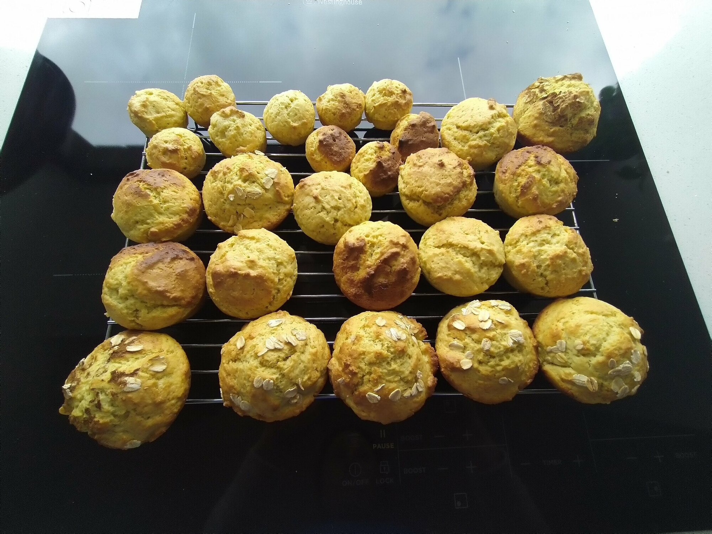

Avocado Muffins

Preheat oven to 200 degrees and grease muffins trays
3 cupsplain flour1 tbspbaking powder1 tspsalt1 cupsugar
In bowl sift plain flour, baking powder, salt and sugar
1/2 cupmargarine
Add margarine and rub with finertips into dry ingredients until crumbly
2avocados2eggs1 cupmilk2 tbsplemon juice
Blend avocados, eggs, milk and lemon juice.
Add wet ingredients to bowl, slowly stiring.
Spoon mixture into muffins tray and bake for 25-30 mins